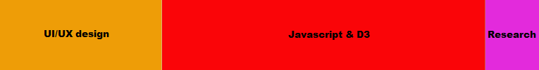
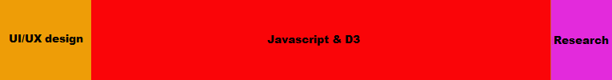

Board Game Wizard
Board Game Wizard was defined as our own mission, by looking more closely at a problem one of us brought up: There is no way to comfortably browse board games online. The previous way involves opening countless tabs, waiting for them to load to even glimpse at any tangible information, and then switch between all these countless tabs to compare the games. Well, during the course of Information Visualisation, we came across a visualiser that was highlighted in the course material. This FilmFinder by Ben Shneiderman and Christopher Ahlberg is a bit dated, but gave us the primary inspiration for what our visualiser could look like, along with the Shneiderman's main mantra for Information Visualisation, "Overview first, Zoom and Filter, then Details on Demand". Incorporating what we had learned during the course, we made our own, modern "FilmFinder", but for board games instead.We really hope you enjoy this visualisation experience!
The main visual structure for this visualiser is the scatterplot in the middle top of the screen. Here, every single game that isn't filtered away is represented as a colored point. The scatterplot is fully interactive, allowing you to pan and zoom the plot, switch axis representation, lock axes, set defined limits for axes, and click on the points for getting details-on-demand, without ever reloading the page.
As for the details-on-demand, you can view this to the right of the scatterplot. The details-on-demand displays relevant information for the browser, along with a link to the source page for the data. Each detail-on-demand view is collected in the 'Game History' further to the right, so that one does not have to find it again, if needed.
Lastly, there's the filtering elements. Located both to the left and below the scatterplot, there are numerous filtering elements, along with some controls for the axes as well. You can filter by name in the input field, by numerical data using the sliders, and by categorical data using the Game Type Legend to the left or the Categories/Mechanics buttons below. Every filter chosen is combined and applied to show your desired query.
Our data is scraped from Board Game Geek on their website boardgamegeek.com, using their own provided API. The license attached to the data allows us to fetch and display the data for free, as long as we do it for non-commercial purposes and as long as we do not modify the data. The data is fetched as a XML-document, then transformed (without altering the entries within) to two JSON-documents containing all our relevant data. The main JSON, containing that data for all board game entries is as of writing this exactly 20180 records long. All other (over 340000) records were either too incomplete for us to work with or just simply not a board game. The list of variable fields for each entry is too long to list, but it involves the numerical, ordinal, and categorical data, along with some identifiers. The second JSON contains two dictionaries of non-bounded categorical data, namely Categories and Mechanics. This JSON helps during the relevant filtering. It simply contains the name of every category and mechanic that our board game entries has, which are 82 and 182 records long, respectively. Lastly, we also have a third JSON that we created from scratch, that simply groups up the categories and mechanics to smaller groups that makes sense.
All source code used for this project can be found at our GitHub-repository*, located on KTH's own Enterprise Server for the service. The only thing not present on the repository is the raw XML-document compiled by using the data scraping script; it's to large for the repository to store. If you desire to observe it, you'll have to run the data scraping script yourself for a few hours.
* We reserve the right to ignore feedback regarding the structure of either the codes within the repository or the repository itself. As time was a pressing factor, structure became low-priority.
My name is Michael and I’m currently taking the computer science and engineering program with a focus on visualisation. I like to read a lot and I also like to play games, both board games and video games. Before quarantine I used to meet up with my friends 2-3 times a month to play boardgames and I have often been frustrated with how user unfriendly the boardgamegeek website is so this was a fun dataset to work on.
Gaia ProjectFlesh and Blood
Monopoly
mathsso@kth.se
Workload Distribution

I am currently studying my fourth year of computer science at KTH. Specifically I am taking the computer science master with specialisation in visualisation. I like board games, computer games, cooking and history. I am also learning how to make 3d models currently.
Crusader KingsCodenames
MonopolyRisk
maxtru@kth.se
Workload Distribution
Hello there! My name is Malin and I am currently studying my fourth year at the Degree Programme in Media Technology at KTH. I am taking my master within computer science with a specialisation within visualisation and computer graphics. I sometimes play board games with my family and friends which made this a fun project to work on. I also enjoy playing computer games, drawing and reading.
RiskCodenames
Alfapet/Scrabble
malinlie@kth.se
Workload Distribution
Well met! My name is Erik and I am currently taking my fourth year of the Computer Science programme at KTH, pursuing a master in visualisation and computer graphics. I have always enjoyed playing board games, both with friends and family, I think it is a great way of socialising and getting to know others. When I am not studying I enjoy playing computer games, cooking, playing some piano and going on walks with my dog.
CodenamesMountain of Madness
MonopolyStratego
ewesterg@kth.se
Workload Distribution
We have learned the fundamentals of Information Visualisation, and applied them in a practical and non-trivial sense which is hopefully apparent from what we have created. Along with that, we've gained some experience and insights on the visualisation production process.
For the backend, we had to construct a less-manual method to fetch our data, because of the limitations on Board Game Geek's XMLAPI. After that, we also needed a less-manual way to extract what we need from the document retrieved. Both of these tasks were previously unfamiliar to us. Also, managing several hundred thousand entries would have been tough without proper limitations to reduce them, which was also something new we had to learn on how to choose and motivate those choices.
For the frontend, we have had to make crucial trade-offs on what to present, to what make smaller/larger, what to include, where to place all the elements, which colors to use, etc. to make everything fit a single web page (preferably without scrolling), which hasn't been obvious. The importance of reflection has also been apparent, to look at the choices made and reevaluate them. Aside from the design choices, we also needed to learn web programming with JavaScript and D3, as none of us were already familiar and comfortable with it. It has been tough to learn these things as we are going, but we've definitely learned more than a thing or two in this area.
Lastly, we have also had to learn how to properly decide on how to test our users. There are a plethora of options to choose from, all with different upsides and downsides, and making that choice hasn't been trivial, but we think that Task-Based User Testing suited our needs well. Once a choice was made on which type, it wasn't immediately clear on how to practically conduct that study. Even more difficulty was added with the current pandemic making physical meet-ups unwanted. It was rough the first few tests, but as we became more used to it, it became easier. The tasks weren't overly-complicated either, so it was hard to lose focus.